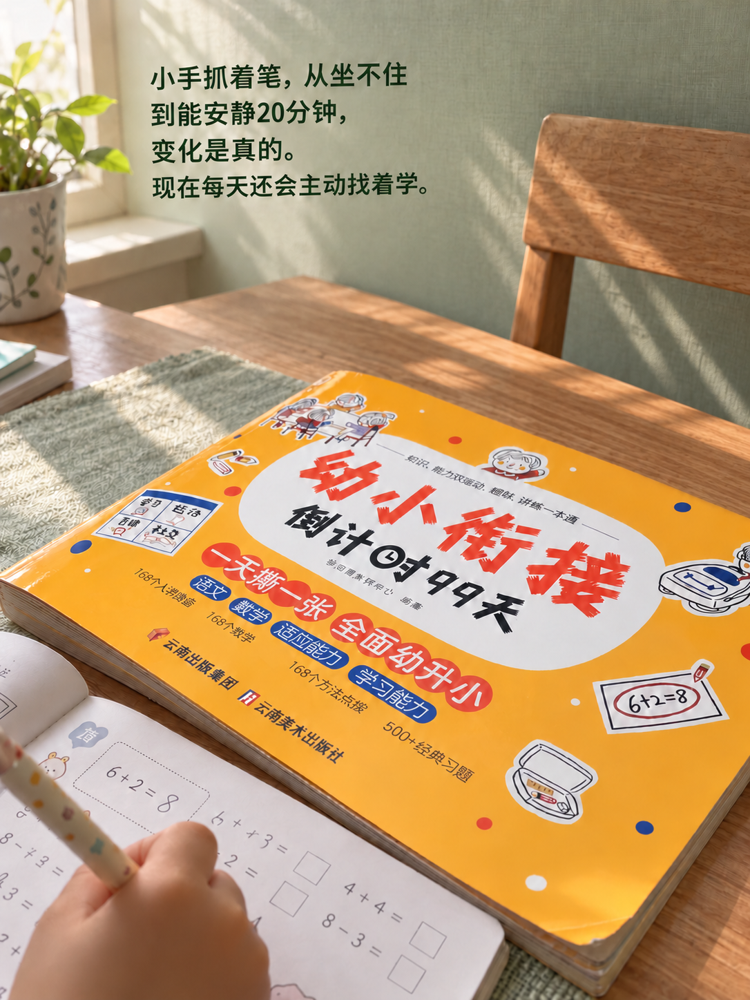
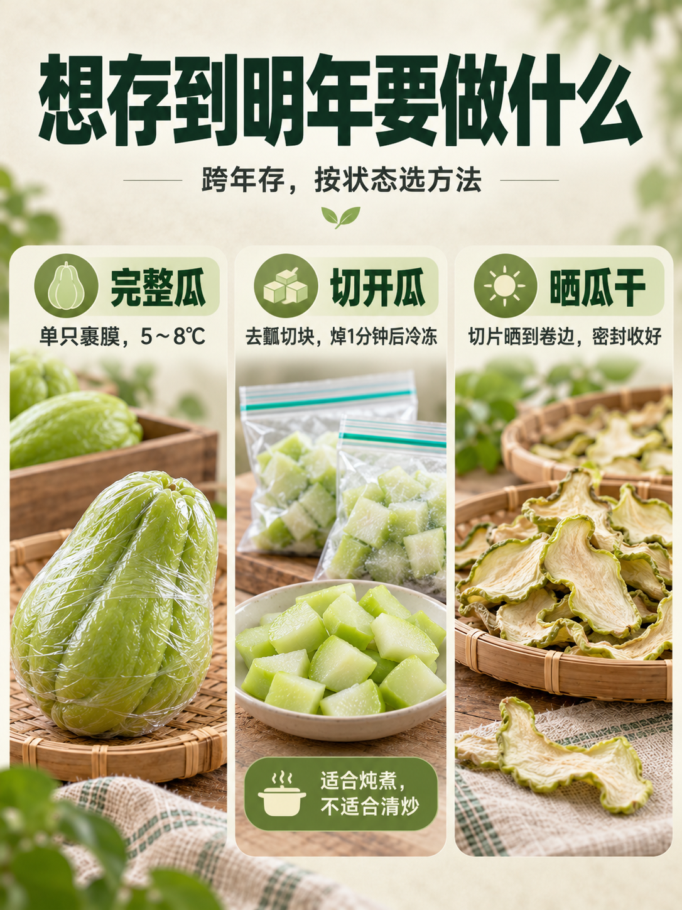

绵羊皮和革的区别｜别被商家绕进去



去年买皮衣的时候，吊牌上写着“绵羊皮革”，我一直以为是真皮。后来跟做质检的朋友聊起来，她让我翻国标看看，我才发现这个叫法本身没问题，问题出在我自己对“皮”和“革”的理解上。
ㅤ
绵羊皮和绵羊皮革在正规标注里指的是同一种东西，区别在于工序阶段。 按照行业通行说法，从动物身上剥下来、还没经过鞣制的叫“皮”，也就是生皮或原料皮；经过鞣制加工、变得不易腐烂之后，就叫“革”。所以“绵羊皮革”的意思是：用绵羊皮鞣制而成的革，它本身是天然皮革，不是人造革。
ㅤ
但市场上有两个容易混淆的点。第一，有些商家把“绵羊皮”和“绵羊皮革”并排写，暗示前者更高档。按国标要求，皮革服装的材质标注应该写“羊皮革”，采用剖层皮革的必须标注“剖层”字样。如果吊牌只写“绵羊皮”反而可能不太规范。第二，确实有人把仿真皮也叫“绵羊皮革”，这时候就得看实物了。
ㅤ
判断方法其实不复杂。天然绵羊皮革的毛孔细小，呈扁圆形，几根一组排成长列，粒面细致光滑，手感柔软有弹性。人造革的背面通常是织物底基，摸起来发涩、偏硬，闻着有塑料味（警惕：现在有一种‘超纤皮’，背面的纤维结构做得很像真皮，但本质还是人造的PU，这时必须靠吊牌上的材质说明来定夺）。另外真皮燃烧有毛发焦糊味，人造革是刺鼻的化学味，不过这个测试一般不会在店里做。
ㅤ
我后来把吊牌翻到背面看执行标准，写的是QB/T 1615（或者更权威的国家标准 GB/T 16799《皮革服装》），属于皮革服装的标准，材质一栏标注“羊皮革”，这才放心。买皮具的时候，与其纠结“皮”和“革”哪个字，不如看完整标注：动物种类、是不是头层、有没有“剖层”字样。这几个信息齐了，基本不会被绕进去。